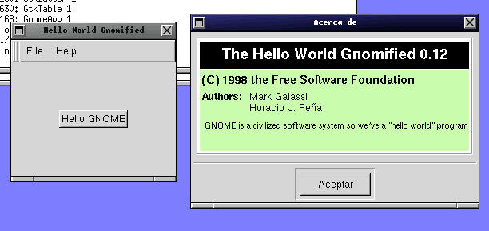

Copyright © 1998 by Proyecto GNOME - Horacio J. Peña (n.)

De la Guía de Estilo de GNOME
Menús y Barras de Menús
La Barra de Menú debe estar presente en todas las Aplicaciones.
Todas las aplicaciones deben tener una entrada "Ayuda" en la barra de Menú.
Todos los menús necesitan al menos una entrada.
Un Menú Acerca de... debe estar disponible bajo el Menú de Ayuda y debe
abrir un pequeño dialogo mostrando por lo menos el nombre de la
aplicación, el autor, la versión y la fecha.
Un menú "Archivo" debe aparecer en todas la aplicaciones, y contener
por lo menos Salir.
Los items del menú que abran diálogos deben indicarlo con un "..."
Los items del menú que lleven submenús lo deben indicar con una flecha.
El menú de Ayuda debe estar justificado a la derecha en la Barra de Menú.
En el momento de escribir este borrador, gnome-hello usa GtkMenuFactory como forma de crear lo menús. Ésta será reemplazada por gnome-app-helper en poco tiempo. (cuando gnome_app_* tenga soporte para i18n, aceleradores y posibilidad de menús justificados a la derecha). Hasta entonces no será una explicación sobre "como" hacer los menús.
Las opciones de menú presentes en gnome-hello son sólo las obligatorias: Fichero/Salida, que usa la misma quit_cb que hemos visto en la sección anterior y Ayuda/Acerca de... que usa el widget gnome-about (ver the section called gnome-about - Widget "Acerca de..." in Chapter 6) escrito por Cesar <miquel@df.uba.ar>.
void
about_cb (GtkWidget *widget, void *data)
{
GtkWidget *about;
gchar *authors[] = {
/* Here should be your names */
"Mark Galassi",
"Horacio J. Peña",
NULL
};
about = gnome_about_new ( "The Hello World Gnomified", VERSION,
/* copyright notice */
"(C) 1998 the Free Software Foundation",
authors,
/* another comments */
"GNOME is a civilized software system "
"so we've a \"hello world\" program",
NULL);
gtk_widget_show (about);
return;
}
|
void gnome_mdi_set_tab_pos(GnomeMDI *mdi, GtkPositionTypetab_pos);Establece la posición de las pestañas de los blocks de notas mostrado en en el modo GNOME_MDI_NOTEBOOK a tab_pos.
gnome_mdi_set_tab_pos (mdi, GTK_POS_LEFT);
|
GnomeMDI *mdi
Un puntero a un objeto MDI.
GtkPositionType tab_pos
La nueva posición de las pestañas de los block de notas para los blocks de notas en modo GNOME_MDI_NOTEBOOK. Ver gtk_notebook_set_tab_pos para más detalles sobre la posición de las pestañas.
gint gnome_mdi_add_view(GnomeMDI *mdi, GnomeMDIChild *child);Crea una nueva vista de child y la añade al MDI; procede de la misma manera que gnome_mdi_add_view en los modos GNOME_MDI_MODAL y GNOME_MDI_TOPLEVEL, pero abre en el modo GNOME_MDI_NOTEBOOK, la vista se añade a una nueva ventana de alto nivel a menos que la que esté activa no tenga vistas en ella.
La función devuelve TRUE si la vista se ha añadido con exito y FALSE en cualquier otro caso.
success = gnome_mdi_add_toplevel_view(mdi, child);
|
GnomeMDI *mdi
Un puntero a un objeto MDI.
GnomeMDIChild *child
El hijo, una vista de la cuál se añadirá al MDI.
void gnome_mdi_unregister(GnomeMDI *mdi, GtkObject *object);Borra un GtkObject de la lista de objetos registrados.
gnome_mdi_unregister(mdi, tool_window);
|
GnomeMDI *mdi
Un puntero a un objeto MDI.
GtkObject *object
Un puntero al objeto a borrar de la lista de objetos registrados.
| Next | ||
| Introducción.. |